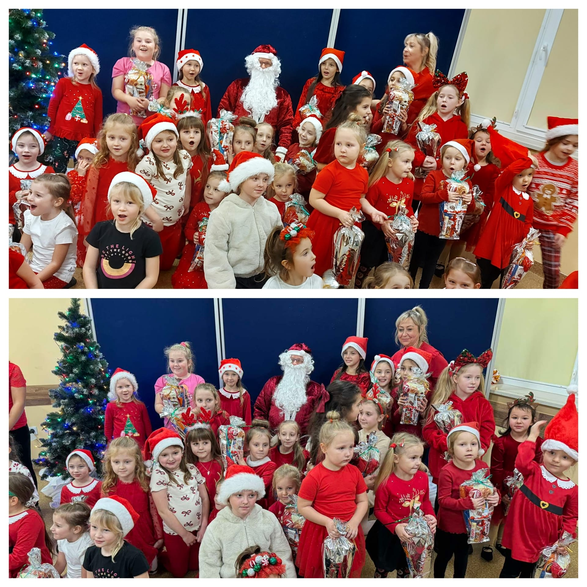
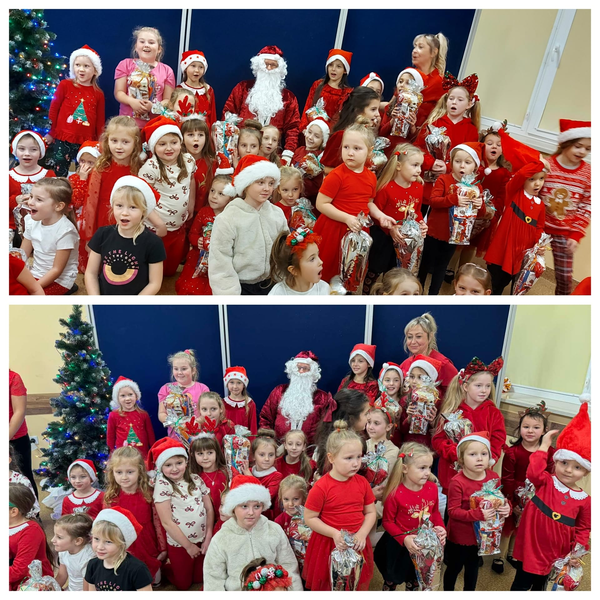
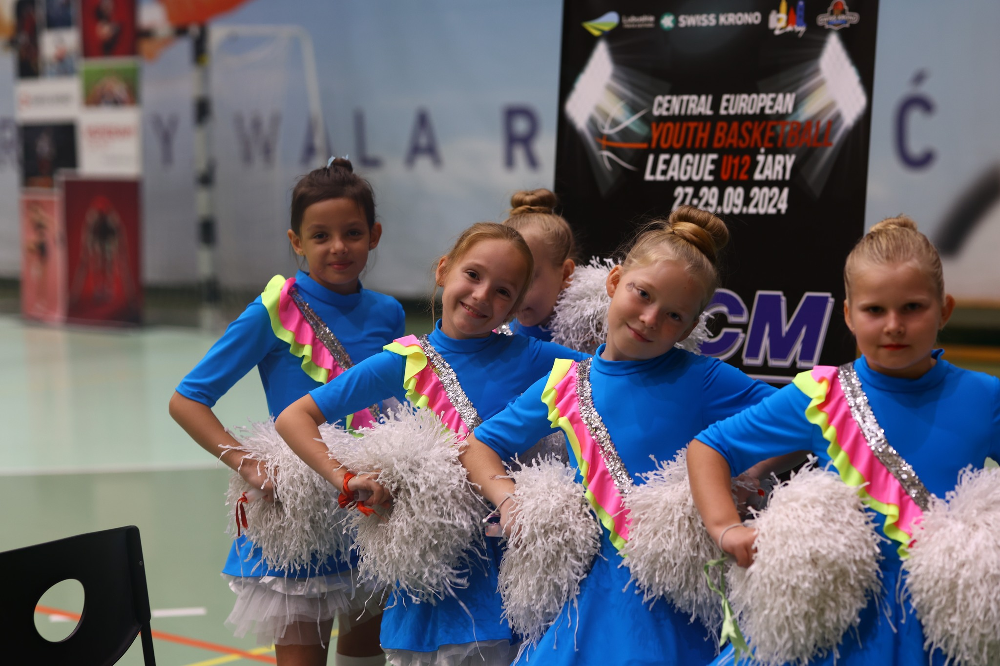
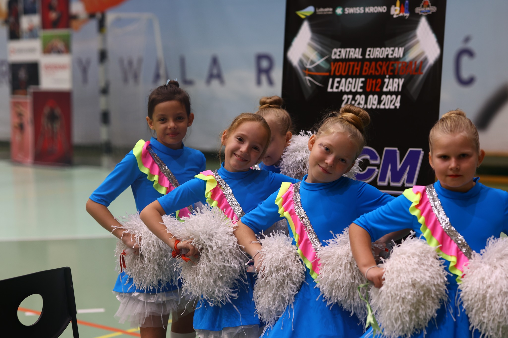
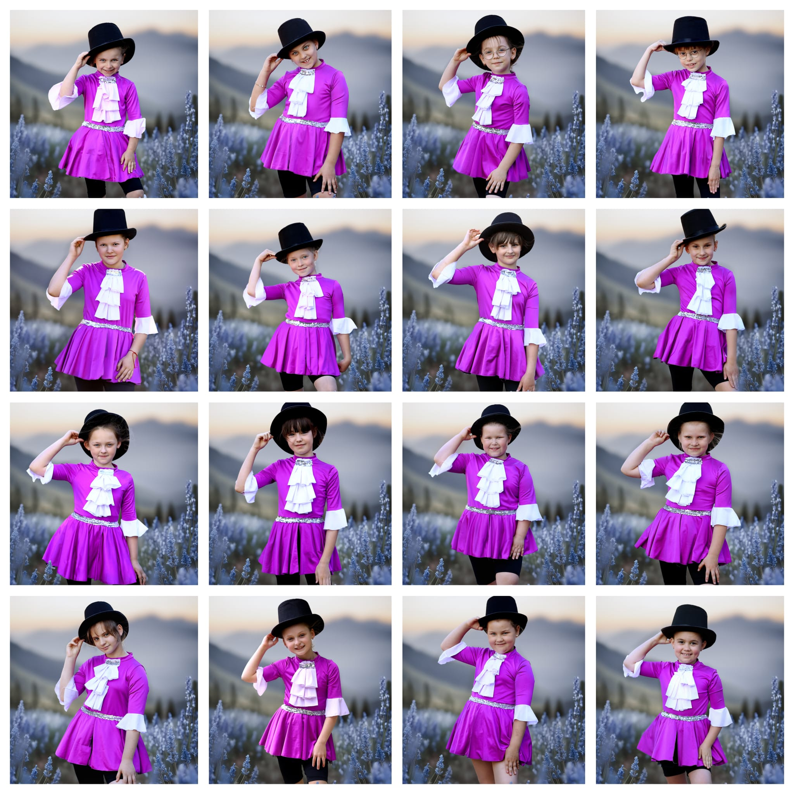
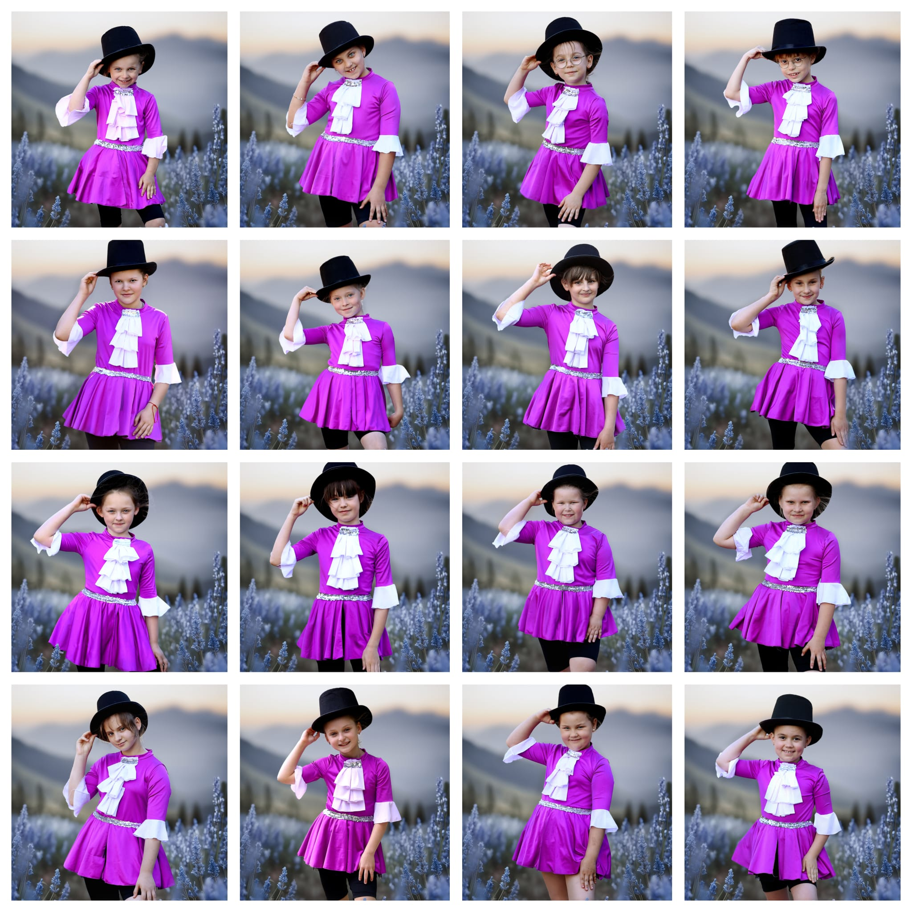
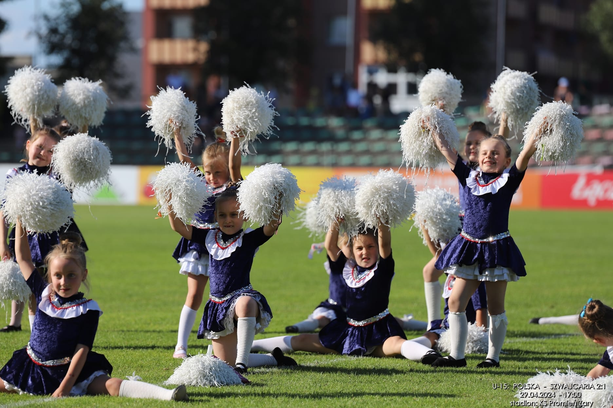
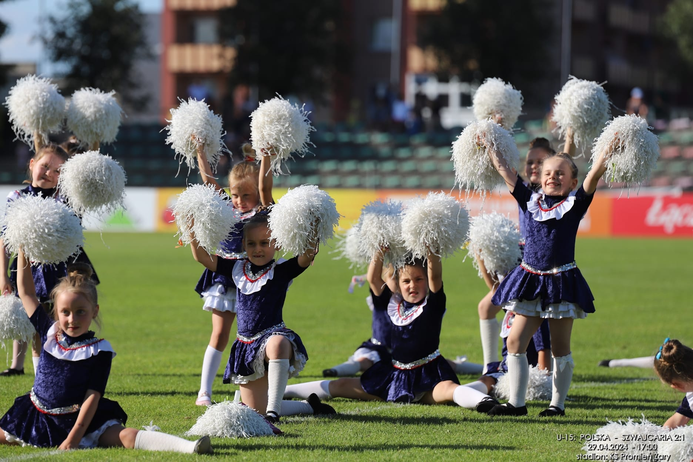
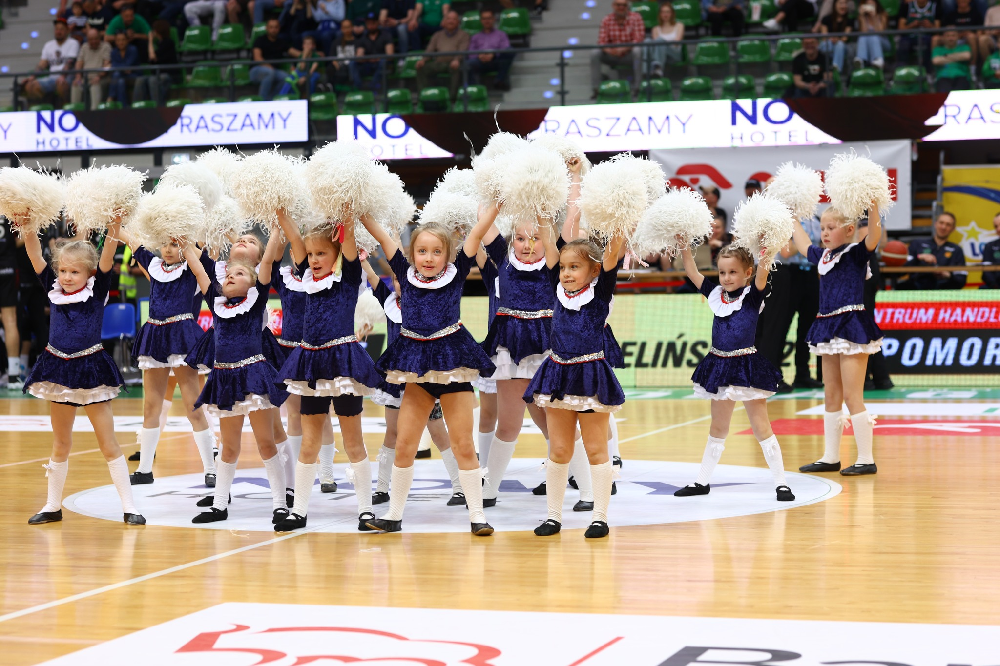
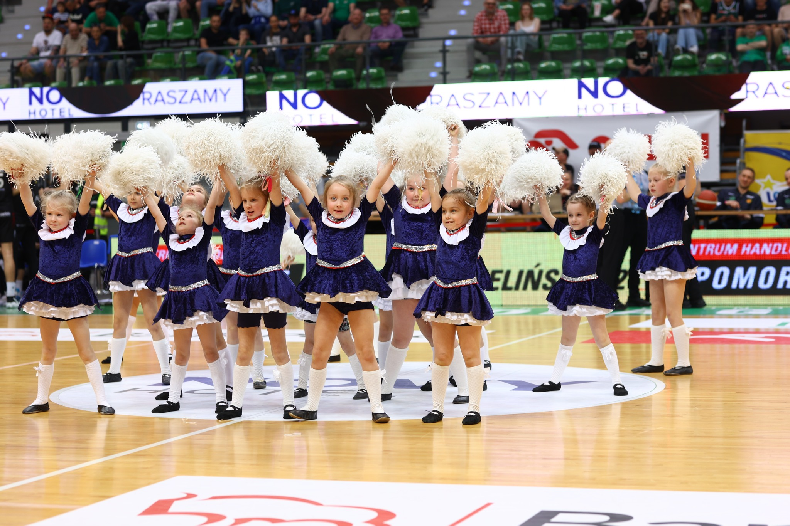

Joy Dance wydarzenia


sezon 2024/2025
Wspaniały ❤️przedświąteczny czas spędzony w doborowym towarzystwie działaczy, trenerów, zawodników Basket Club Swiss Krono Żary. Niesamowita gościnność, rodzinna atmosfera, dużo ciepła i prezentów oraz niezapomniane widowisko sportowe CEYBL U14. Dziękujemy, że mogłyśmy być z Wami 🤗 (grudzień, 2024 r.)

Hoł, hoł, hoł !!!
Pierwszy Mikołaj już wylądował ğŸ…
Dla grzecznych dziewczynek z zespołu
JOY DANCE przyniósł mnóstwo prezentów 🎁
Ciężka praca na treningach się opłacała 💪💪💪
(grudzień, 2024 r.)
 

Piątkowy wieczór pełen wrażeń😍😍😍 Występ Joy Dance na ekstraklasie piłki koszykowej Zastal Zielona Góra❤️ Piękne widowisko sportowe 😠Pełne trybuny💪💪💪 Wiele pozytywnych emocji❤️❤️❤️ (listopad, 2024 r.)

W nowej odsłonie⤠w pięknej scenerii 🇵🇱🇸🇰🇩🇪🇨🇿 Central European Youth Basketball League U12M w Żarach 👏👏👏organizowanym przez Basket Club Swiss Krono Żary , zespół cheerleaders z JOY DANCE rozpoczął swój taneczny sezon 💃 Na parkiecie koszykarskiego boiska można było zobaczyć uwieńczenie ciężkiej pracy, sportową walkę młodych zawodników i dużo pozytywnej energii ğŸ‘ğŸ‘👠Basket Club Swiss Krono Żary dziękujemy za zaproszenie❤️ (wrzesień, 2024 r.)
 

Piękne sobotnie popołudnie w malowniczej wsi Złotnik było wypełnione tańcem Górali Czadeckich i zespołu Joy Dance 😍🥰👋
Tanecznym krokiem rozpoczęto obchody dożynek .
Dla dziewczynek to nowe doświadczenie ♥ï¸
Dziękujemy Pani sołtys Małgorzacie Tymińskiej za zaproszenie i cudowny poczęstunek ğŸ¬ğŸ«ğŸğŸ¡â™¥ï¸
Jesteśmy pod wrażeniem, że tak pięknie kultywuje się tradycje 😍
Życzymy udanej zabawy 🎆🎷🎹🎺🎸
(wrzesień, 2024 r.)

sezon 2023/2024
Niedzielny poranek był dla nas wyjątkowy❤️ Na stadionie w Grabiku zespół Joy Dance zatańczył dla naszego kolegi Gracjana Wymiatał, który zmaga się z Zespołem Leigha. Piękna, słoneczna pogoda, dużo pyszności, sportowa walka małych piłkarzy, taniec i wiele pomocnych serc sprawiło, że na twarzy chłopca pojawił się uśmiech ❤️😘🍀 Tym pięknym akcentem zakończyłyśmy nasz taneczny sezon❤️ Jesteśmy spełnione🤗😘 Brałyśmy udział w niesamowitych wydarzeniach sportowych na szczeblu krajowym i międzynarodowym. Przez swój taniec i bezinteresowność kochanych rodziców, mogłyśmy pomóc Gracjankowi i Misi. Życzymy pięknych wakacji ☀️🥰❤️ (czerwiec, 2024 r.)


Słodziaki z Joy Dance w obiektywie Pani Wiolety Wieciech 😍😘📷♥️🌞🤗🎩👌
NelKa Fotografia (czerwiec, 2024 r.)
 

Piękne wydarzenie sportowe w naszym mieście 😠mecz piłki nożnej Polska-Szwajcaria U15. Kochane dziewczynki z Joy Dance przyniosły szczęście reprezentacji Polski. Wynik 2-1 dla naszego kraju 👋👋👋👋👋 KS Promień Żary dziękujemy za zaproszenie ♥️ (maj, 2024 r.)
 

Żary to SPORT, jak sport to nie może nas zabraknąć❤️Joy Dance na Ogólnopolskim Mityngu Swiss Krono Cup Żary 2024. Cudowne chwile, wspaniała publiczność i niezmordowani zawodnicy💪✌️👍 MLKS Agros Żary - lekkoatletyka to zaszczyt być z Wami ❤️👏👏


Gorące pozdrowienia z parkietu Ekstraklasy Enea Zastal BC Zielona Góra przesyła Joy Dance❤️❤️❤️ Cóż to były za emocje💪💪💪zwycięstwo w pięknym stylu i moje Małe Laleczki 🥰🥰🥰 Takie chwile twarzą piękną historię ❤️❤️❤️ (kwiecień, 2024 r.)
 

To był piękny dzień ♥️ Joy Dance na murawie boiska KS Promień Żary. Dużo sportowych emocji 💪💪💪 dużo słońca 🌞🌞🌞 jeszcze więcej gorących serc oddanych walczącej z chorobą Michalinie ♥️♥️♥️ Dziękujemy, że mogliśmy być z Wami🤗 (marzec, 2024 r.)


Joy Dance na Międzynarodowym Turnieju CEYBL U14 zorganizowanym przez Basket Club Swiss Krono Żary. Cóż to były za emocje!!! Piękne widowisko sportowe ğŸ‘ğŸ‘👠mistrzowskie pokazy Piotra Grabowskiego i Mateusza Karbowego 😠dużo oddanego serca❤️❤️❤️ dla małego bohatera Gracjanka z Grabika. Dzięki serdeczności organizatorów małe wolontariuszki mogły zebrać datki na rehabilitację chorego kolegi. Kwotę, którą zebrały to 1496, 77 zł. Basket Club Swiss Krono Żary ,to zaszczyt być z Wami ❤️ (marzec, 2024 r.)
To był niesamowity czas dla zespołu Joy Dance ❤️❤️❤️ 6 grudnia gościłyśmy u naszych przyjaciół Basket Club Swiss Krono Żary, gdzie otrzymałyśmy prezenty od prawdziwego Åšwiętego Mikołaja ğŸ˜ğŸ¤—😘W poniedziałek 11 grudnia na nasz trening przyszedł pomocnik Åšwiętego Mikołaja, sprawdził czy faktycznie dajemy z siebie wszystko na treningach. Mikołaj utwierdził się w przekonaniu, że zasługujemy na prezenty 🥰🤗🅠(grudzień, 2023 r.)

Tego jeszcze nie było❗️❗️❗️ Joy Dance na ekstraklasie ❗️ Niesamowita atmosfera, piękne widowisko sportowe i moje małe laleczki 😘 Nie da się opisać wrażeń 🥰 Tego wieczoru można było zobaczyć łzy rodziców, uśmiechy dzieci i sportową walkę Enea Stelmet Zastal Zielona Góra😘🥲💪Powodzenia w kolejnych meczach❤️ (listopad, 2023 r.)


Joy Dance - nowy sezon, nowe wyzwanie ❤️❤️❤️Niezapomnianym przeżyciem dla dziewczynek jest wysęp na parkiecie boiska BC Swiss Krono Żary. Ta niesamowita atmosfera, publiczność, sportowa walka dodaje nam skrzydeł. Dziękujemy za zaproszenie 🙂 (październik, 2023 r.)

sezon 2022/2023
Dziś w Mirostowicach Dolnych na rodzinnym festynie, zespół Joy Dance i Joy Dance Mini przedstawił swoje choreografie. Publiczność serdecznie powitała tańczące dziewczynki. Było dużo zabawy, uśmiechu i pyszności. Tanecznym krokiem zakończyłyśmy nasz treningowy sezon. Życzymy wspaniałych wakacji 🌞🌞🌞 (czerwiec, 2023 r.)

Wspaniałe wspomnienia z ostatniego występu Joy Dance i Joy Dance Mini. Dużo emocji❤️❤️❤️piękne widowisko sportowe😍niezawodna publiczność🤗spotkanie z Mateuszem Rolą - brązowym medalistą programu YOU CAN DANCE, z którym łączy nas wspólna pasja- TANIEC❤️❤️❤️ (kwiecień, 2023 r.)